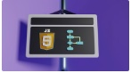

How to become a Frontend Master

Frontend development moves fast, and it's easy to feel like you're always one framework behind. The good news is that mastery isn't about chasing every new tool — it's about building a solid foundation that makes every new tool easier to pick up.
Master the fundamentals first
Before reaching for a framework, get comfortable with semantic HTML, modern CSS (flexbox, grid, custom properties), and vanilla JavaScript. Frameworks come and go, but the concepts underneath them — the DOM, events, state, and rendering — stay largely the same. Developers who understand the fundamentals adapt to new tools far faster than those who don't.
Learn to think in components
Modern interfaces are built from small, reusable pieces — buttons, cards, forms, modals — each with its own state and behavior. Once you start thinking in components, it becomes much easier to reason about complex UIs, whether you're using React, Vue, or nothing but plain JavaScript.
Care about the details
What separates a good frontend developer from a great one is often the small things: consistent spacing, accessible color contrast, keyboard navigation, loading states, and graceful handling of errors. These details rarely show up in a tutorial, but they're exactly what users notice — even if only subconsciously.